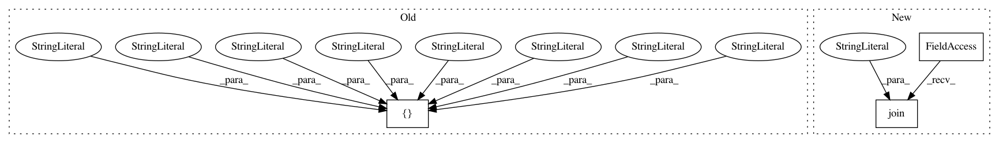

c29a0cc338926fc5cee287bf1f6596dc3094a3a1,test/remote_docker.py,,start_container,#Any#Any#,24
Before Change
run_cmds = ["docker", "run", "-d", "-p", str(port) + ":22", "--name", name, "--mount", "type=bind,source=" + source_dir + ",target=/tmp/nni", image]
output = check_output(run_cmds)
commit_id = output.decode("utf-8")
sdk_cmds = ["docker", "exec", name, "python3", "-m", "pip", "install", "--user", "--no-cache-dir", "/tmp/nni/pynni/"]
check_call(sdk_cmds)
tools_cmds = ["docker", "exec", name, "python3", "-m", "pip", "install", "--user", "--no-cache-dir", "/tmp/nni/tools"]
check_call(tools_cmds)
with open(source_dir + "/port", "w") as file:
After Change
run_cmds = ["docker", "run", "-d", "-p", str(port) + ":22", "--name", name, "--mount", "type=bind,source=" + source_dir + ",target=/tmp/nni", image]
output = check_output(run_cmds)
commit_id = output.decode("utf-8")
wheel_name = find_wheel_package(os.path.join(source_dir, "dist"))
if not wheel_name:
print("Error: could not find wheel package in {0}".format(source_dir))
exit(1)
In pattern: SUPERPATTERN
Frequency: 3
Non-data size: 3
Instances
Project Name: microsoft/nni
Commit Name: c29a0cc338926fc5cee287bf1f6596dc3094a3a1
Time: 2019-03-25
Author: shinaiyang@pku.edu.cn
File Name: test/remote_docker.py
Class Name:
Method Name: start_container
Project Name: dmlc/gluon-nlp
Commit Name: 32e87d4d4aa20a6eb658ee90d765ccffbd160571
Time: 2020-08-14
Author: xshiab@connect.ust.hk
File Name: setup.py
Class Name:
Method Name:
Project Name: AlexEMG/DeepLabCut
Commit Name: cb560e17278530c14b74b06fa3f3c718e25c9616
Time: 2019-09-20
Author: amathis@fas.harvard.edu
File Name: examples/testscript.py
Class Name:
Method Name: